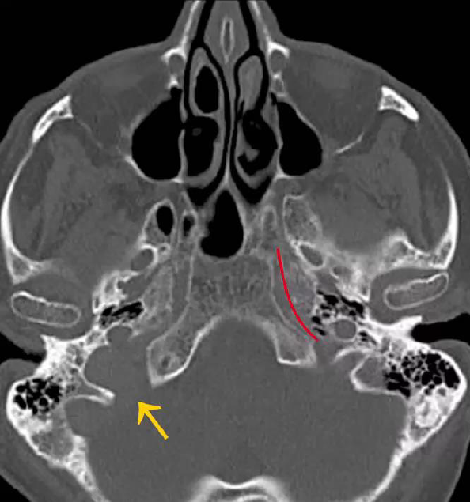

Απεικονιστική Διερεύνηση Παθήσεων Ωτός και Λιθοειδούς
Συγκεντρωμένες σημειώσεις με έμφαση στα απεικονιστικά patterns CT / MRI
1. Τρήματα της βάσης του κρανίου – High Yield
 Τετρημένο πέταλο ηθμοειδούς οστού
Τετρημένο πέταλο ηθμοειδούς οστού
 Συνολική τοπογραφία βασικών τρημάτων
Συνολική τοπογραφία βασικών τρημάτων

Παράδειγμα ψευδομάζας / ανατομικής παραλλαγήςΒασικά τρήματα και τι περιέχουν
- Τετρημένο πέταλο → οσφρητικά νεύρα, ηθμοειδείς αρτηρίες
- Οπτικό τρήμα → οπτικό νεύρο, οφθαλμική αρτηρία
- Υπερκόγχιο σχίσμα → III, IV, V1, VI, οφθαλμική φλέβα
- Στρόγγυλο τρήμα → V2
- Ωοειδές τρήμα → V3
- Ακανθικό τρήμα → μέση μηνιγγική αρτηρία
- Βιδιανός / πτερυγοειδής πόρος → αρτηρία και νεύρο πτερυγοειδούς πόρου
- Καρωτιδικός σωλήνας → έσω καρωτίδα + συμπαθητικό πλέγμα
- Σφαγιτιδικό τρήμα → IX, X, XI, κάτω λιθοειδής κόλπος, έσω σφαγίτιδα
- Βελονομαστοειδές τρήμα → προσωπικό νεύρο VII
- Υπογλώσσιος πόρος → XII
2. Ψευδομάζες
- Είναι ανατομικές παραλλαγές που μιμούνται μάζα.
- Κλασικό παράδειγμα: σφαγιτιδικό εκκόλπωμα.
- Σημαντικό για να μην μπερδευτείς με νεόπλασμα.
3. Ανατομία κροταφικού οστού – τι να ξέρεις
- Έξω ακουστικός πόρος
- Τυμπανική κοιλότητα / μέσο ους
- Σφύρα, άκμονας, αναβολέας
- Μαστοειδείς κυψέλες
- Έσω ακουστικός πόρος
- Κοχλίας, προθάλαμος, ημικύκλιοι σωλήνες
- Πορεία προσωπικού νεύρου μέσα στο λιθοειδές
5. Κατάγματα κροταφικού οστού
- Δύο βασικοί τύποι: επιμήκη και εγκάρσια
- Τα επιμήκη είναι γενικά συχνότερα.
- Τα εγκάρσια σχετίζονται συχνότερα με βλάβη λαβυρίνθου και νευροαισθητήρια βαρηκοΐα.
Απεικονιστικά
- CT: λεπτή γραμμή κατάγματος που διασχίζει το κροταφικό οστό
- Μπορεί να συνυπάρχουν αίμα στο μέσο ους, εξάλειψη αέρα, διαχωρισμός οσταρίων
6. Διαφυγή ΕΝΥ και μετατραυματική εγκεφαλοκήλη
 Η διαφυγή ΕΝΥ υποδηλώνει επικοινωνία κρανιακής κοιλότητας με μέσο ους / μαστοειδές.
Η διαφυγή ΕΝΥ υποδηλώνει επικοινωνία κρανιακής κοιλότητας με μέσο ους / μαστοειδές.
 Εγκεφαλοκήλη = πρόπτωση ενδοκρανιακού περιεχομένου μέσω οστικού ελλείμματος.
Εγκεφαλοκήλη = πρόπτωση ενδοκρανιακού περιεχομένου μέσω οστικού ελλείμματος.
- Διαφυγή ΕΝΥ συνήθως μετά από κάταγμα βάσης κρανίου / κροταφικού οστού
- Στο CT μπορεί να φαίνεται εξάλειψη αέρα και υγρό στις αεροφόρες κοιλότητες
- Μετατραυματική εγκεφαλοκήλη φαίνεται καλύτερα στη MRI
7. Τραυματισμός προσωπικού νεύρου
- Το προσωπικό νεύρο πορεύεται μέσα στο λιθοειδές οστό.
- Κάταγμα που περνά από τον προσωπικό σωλήνα μπορεί να το τραυματίσει.
- Κλινικά: πάρεση ή παράλυση προσωπικού.
8. Εικόνα τραυματισμού VII
 Εντόπιση της πορείας του προσωπικού νεύρου σε τραυματισμό.
Εντόπιση της πορείας του προσωπικού νεύρου σε τραυματισμό.
9. Αποφρακτική υπερκεράτωση (Keratosis Obturans)
- Συσσώρευση κερατίνης στον έξω ακουστικό πόρο
- Προκαλεί διάταση και απόφραξη του πόρου
- Κλινικά: έντονος πόνος, βαρηκοΐα αγωγιμότητας, σπάνια ωτόρροια
Ωτοσκοπικά / CT
- Κερατινώδης μάζα που γεμίζει τον πόρο
- Διευρυμένος οστέινος πόρος
- Άθικτο τύμπανο
- CT: μαλακός ιστός μέσα στον έξω ακουστικό πόρο
10. Keratosis Obturans
 Η μάζα κερατίνης φαίνεται σαν πλήρωση του έξω ακουστικού πόρου με διάταση.
Η μάζα κερατίνης φαίνεται σαν πλήρωση του έξω ακουστικού πόρου με διάταση.
11. Οξεία μέση ωτίτιδα / μαστοειδίτιδα


Βασικά σημεία
- Μπορεί να εμφανιστεί σε οποιαδήποτε ηλικία
- Σπάνια απομονώνεται στρεπτόκοκκος ή αιμόφιλος
- Υπάρχει εξάλειψη του αέρα στο μέσο ους και στις μαστοειδείς κυψέλες
- Με σκιαγραφικό μπορεί να φαίνεται πρόσληψη λόγω φλεγμονής
Πώς την αναγνωρίζω ακτινολογικά;
- Φυσιολογικά το μέσο ους και οι μαστοειδείς κυψέλες περιέχουν αέρα → είναι μαύρα στο CT
- Στην ωτίτιδα ο αέρας αντικαθίσταται από υγρό / φλεγμονή → η περιοχή γίνεται γκρι
- Στη MRI με σκιαγραφικό, το φλεγμονώδες τοίχωμα / ιστοί μπορεί να ενισχύονται
Επιπλοκές
- Απόστημα
- Μηνιγγίτιδα
- Θρόμβωση
12. Κακοήθης εξωτερική ωτίτιδα


- Βαριά επεκτατική λοίμωξη του έξω ακουστικού πόρου
- Μπορεί να προχωρήσει στη βάση του κρανίου
- Κλασικά τη σκεφτόμαστε σε διαβητικούς ή ανοσοκατασταλμένους
Τι δείχνουν οι εικόνες;
- CT → πάχυνση / μαλακός ιστός στον έξω ακουστικό πόρο, πιθανή οστική διάβρωση
- MRI → καλύτερη ανάδειξη επέκτασης στους μαλακούς ιστούς και στη βάση κρανίου
13. Δευτεροπαθές / επίκτητο χολοστεάτωμα


Χολοστεάτωμα = συσσώρευση κερατίνης / πλακώδους επιθηλίου μέσα στο μέσο ους. Δεν είναι αληθινός όγκος, αλλά μπορεί να προκαλέσει διάβρωση οστού και οσταρίων.
Πού εμφανίζεται;
- Χαλαρή μοίρα τυμπάνου → χώρος του Prussak
- Σκληρή μοίρα τυμπάνου → οπίσθιο μεσοτύμπανο
- Επίσης γύρω από τα οστάρια, στην ευσταχιανή σάλπιγγα και στο οπίσθιο επιτυμπάνιο
Από τι αποτελείται;
- Πλακώδες επιθήλιο
- Κερατίνη
- Χοληστερινικοί κρύσταλλοι
CT – πώς το αναγνωρίζω;
- Οι περιοχές που θα είχαν αέρα και θα ήταν μαύρες, τώρα γεμίζουν με μαλακό ιστό και γίνονται γκρι
- Συχνά φαίνεται και διάβρωση οστού / οσταρίων
MRI – τι είναι χαρακτηριστικό;
- Δεν προσλαμβάνει σκιαγραφικό
Κλινικά
- Συχνότερα > 40 ετών
- Δύσοσμη ωτόρροια
- Βαρηκοΐα αγωγιμότητας
Διαφορική διάγνωση
- Χοληστερινικό κοκκίωμα
- Παραγαγγλίωμα
14. Χολοστεάτωμα – MRI και χειρουργική


Αυτομαστοειδεκτομή – τι είναι;
Η αυτομαστοειδεκτομή είναι εικόνα εκτεταμένης οστικής διάβρωσης από χολοστεάτωμα, τόσο έντονης που η κοιλότητα μοιάζει σαν να έχει ήδη γίνει μαστοειδεκτομή.
 Εκτεταμένη διάβρωση με εικόνα “self-mastoidectomy”.
Εκτεταμένη διάβρωση με εικόνα “self-mastoidectomy”.
 Μετεγχειρητική / χειρουργική εικόνα ολικής μαστοειδεκτομής.
Μετεγχειρητική / χειρουργική εικόνα ολικής μαστοειδεκτομής.
Θεραπεία: χειρουργική αφαίρεση.
15. Bell’s palsy

Η Bell’s palsy είναι ιδιοπαθής περιφερική πάρεση / παράλυση του προσωπικού νεύρου.
- Εμφανίζεται συνήθως οξέως
- Κλινικά: αδυναμία όλου του ημιμορίου του προσώπου
- Η απεικόνιση γίνεται κυρίως σε άτυπες περιπτώσεις ή για αποκλεισμό άλλης αιτίας
16. Οστεοποιός λαβυρινθίτιδα
 Παθολογική μετατροπή του λαβυρίνθου από φλεγμονώδη διεργασία σε ίνωση και τελικά οστό.
Παθολογική μετατροπή του λαβυρίνθου από φλεγμονώδη διεργασία σε ίνωση και τελικά οστό.
- Παθολογική κατάσταση του έσω ωτός όπου ο υμενώδης λαβύρινθος μετατρέπεται προοδευτικά σε οστό
- Αίτια: ιογενής ή βακτηριακή λοίμωξη, αυτοάνοση αιτιολογία, τραύμα
- Οδηγεί σε μόνιμη βαριά νευροαισθητήρια βαρηκοΐα και απώλεια ισορροπίας
Απεικονιστικά στάδια
- Οξύ φλεγμονώδες στάδιο → MRI: ενίσχυση / πρόσληψη λόγω φλεγμονής, CT ίσως φυσιολογική
- Ινώδες στάδιο → MRI: χάνεται το φυσιολογικό έντονο σήμα του υγρού στην Τ2
- Οστεοποιό στάδιο → MRI: πλήρης απώλεια σήματος υγρού, CT: αυξημένη πυκνότητα σε κοχλία και ημικύκλιους
17. Σβάννωμα ακουστικού νεύρου


- Καλοήθης όγκος από κύτταρα Schwann
- Αναπτύσσεται συνήθως μέσα στον έσω ακουστικό πόρο
- Μπορεί να επεκτείνεται προς τη γεφυροπαρεγκεφαλιδική γωνία
- Βραδέως αναπτυσσόμενος
Απεικονιστικά
- Μάζα στην περιοχή του έσω ακουστικού πόρου / CPA
- Στη MRI συνήθως προσλαμβάνει σκιαγραφικό
- Αν είναι μεγαλύτερο, μπορεί να διευρύνει τον έσω ακουστικό πόρο
18. Μηνιγγίωμα


- Εξωαξονικός όγκος από μηνιγγοθηλιακά κύτταρα
- Συχνά προσφύεται στη σκληρά μήνιγγα
- Στη MRI συνήθως προσλαμβάνει έντονα σκιαγραφικό
19. Δερμοειδής / επιδερμοειδής κύστη

- Συγγενείς βλάβες
- Η επιδερμοειδής κύστη συχνά μπαίνει στη διαφορική διάγνωση κυστικών βλαβών
- Η δερμοειδής μπορεί να έχει λίπος
20. Χοληστερινικό κοκκίωμα


- Σχετίζεται με επαναλαμβανόμενα επεισόδια αιμορραγίας σε κλειστή κοιλότητα του λιθοειδούς / μέσου ωτός
- Κλινικά μπορεί να προκαλεί βαρηκοΐα αγωγιμότητας
- Blue eardrum = κυανή / μπλε τυμπανική μεμβράνη
- Μπορεί να προκαλεί παρεκτόπιση οσταρίων επειδή λειτουργεί ως επεκτεινόμενη μάζα
Γιατί είναι υψηλό σε Τ1 και Τ2;
Επειδή περιέχει προϊόντα αίματος και χοληστερινικό υλικό. Τα υποπροϊόντα αιμορραγίας δίνουν υψηλό σήμα τόσο στην Τ1 όσο και στην Τ2.
21. Παραγαγγλιώματα
Α. Τυμπανικό παραγαγγλίωμα


- Όγκος από παραγαγγλιακά κύτταρα
- Σχετίζεται με το τυμπανικό νεύρο, κλάδο του γλωσσοφαρυγγικού
- Κλινικά: εμβοές, βαρηκοΐα
- Είναι έντονα αγγειούμενη μάζα
Β. Παραγαγγλίωμα σφαγιτιδικού τρήματος


- Χημοδέκτωμα με επιθηλιοειδή και στηρικτικά κύτταρα
- Αναπτύσσεται στο σφαγιτιδικό τρήμα, στον καρωτιδικό βολβό ή στο τύμπανο
- Συχνότερα σε γυναίκες 40–60 ετών
- Υπάρχουν οικογενείς περιπτώσεις και σύνδρομα πολλαπλής νεοπλασίας
Γ. Παραγαγγλίωμα καρωτιδικού σωματίου


- Χημειοδέκτωμα του καρωτιδικού σωματίου
- Μπορεί να είναι σποραδικό ή οικογενές
- Μπορεί να είναι πολυκεντρικό
- Κλινικά: σφύζουσα μάζα, νευροπάθεια πνευμονογαστρικού ή υπογλωσσίου
22. Καρκίνωμα από επιθηλιακά κύτταρα

- Κακοήθης επιθηλιακή βλάβη
- Στην CT αναζητούμε κυρίως οστική διάβρωση
- Στη MRI αξιολογούμε έκταση σε μαλακά μόρια
23. Εφηβικό αγγειορινοίνωμα

- Καλοήθης αλλά τοπικά επιθετικός όγκος
- Αναπτύσσεται στο σφηνοϋπερώιο τρήμα σε εφήβους
- Προκαλεί διάβρωση και remodelling οστών
- ΔΔ: εγκεφαλοκήλη, πολύποδας, αιμαγγείωμα, ραβδομυοσάρκωμα
24. Καρκίνος του ρινοφάρυγγα

- Συχνά 40–50 έτη, συχνότερος σε άνδρες
- Σχετίζεται με Epstein-Barr και γενετικούς / περιβαλλοντικούς παράγοντες
- Συχνή θέση: βόθρος του Rosenmuller
- Κλινικά: ανώδυνος τραχηλικός λεμφαδένας, μέση ωτίτιδα, διήθηση κρανιακών νεύρων
25. Παθήσεις κεντρικής μοίρας βάσεως κρανίου
Α. Ινώδης δυσπλασία

- Αντικατάσταση οστίτη από ινώδη ιστό
- Συχνή στα οστά της βάσης κρανίου
- CT: διόγκωση οστού με υφή “δίκην τριμμένης υάλου”
- MRI: δυνατότητα πρόσληψης σκιαγραφικού
Β. Νόσος Paget

- Χρόνια νόσος μέσης / μεγαλύτερης ηλικίας
- Διαταραχή ισορροπίας οστεοκλαστικής και οστεοβλαστικής δραστηριότητας
- Προκαλεί σκλήρυνση και αναδιοργάνωση οστών
- Πιο εκτεταμένη από την ινώδη δυσπλασία
26. Χόρδωμα αποκλίματος – Χονδροσάρκωμα – Μεταστάσεις
Α. Χόρδωμα αποκλίματος


- 5η–7η δεκαετία
- Αναπτύσσεται από υπολείμματα της νωτιαίας χορδής
- MRI: ανομοιογενής μάζα, δυνατότητα για αιμορραγίες / επασβεστώσεις
Β. Χονδροσάρκωμα


- Κακοήθης βραδέως αναπτυσσόμενος όγκος
- Ανομοιογενής μάζα με πιθανές επασβεστώσεις / αιμορραγίες
Γ. Μεταστάσεις

- Συχνές πρωτοπαθείς εστίες: πνεύμονας, μαστός, προστάτης, νεφρός
- Μπορεί να είναι οστεολυτικές ή οστεοβλαστικές
- CT → καλύτερα οστικές αλλοιώσεις
- MRI → καλύτερα μυελός των οστών / μαλακά μόρια
27. Νευριλείμωμα σφαγιτιδικού τρήματος


- Schwannoma στην περιοχή του σφαγιτιδικού τρήματος
- Μπορεί να επηρεάζει τα κατώτερα κρανιακά νεύρα
- Στη MRI συνήθως απεικονίζεται ως ενισχυόμενη μάζα
28. Ωτική πρόθεση

Μετεγχειρητική εικόνα πρόθεσης στην αλυσίδα των οσταρίων.
29. Κοχλιακό εμφύτευμα


Αναγνώριση της θέσης του ηλεκτροδίου στον κοχλία και της μετεγχειρητικής εικόνας.
30. Mini recap – τα πιο εξεταστικά patterns
- Μέση ωτίτιδα / μαστοειδίτιδα → χάνονται οι μαύρες αεροφόρες κυψέλες, γίνονται γκρι
- Χολοστεάτωμα → μαλακός ιστός αντί για αέρα + διάβρωση οστών + MRI χωρίς πρόσληψη
- Κακοήθης εξωτερική ωτίτιδα → επιθετική λοίμωξη με επέκταση στη βάση κρανίου
- Χοληστερινικό κοκκίωμα → υψηλό σήμα Τ1 και Τ2
- Σβάννωμα → μάζα έσω ακουστικού πόρου / γεφυροπαρεγκεφαλιδικής γωνίας
- Ινώδης δυσπλασία → ground-glass CT
- Μεταστάσεις → CT για οστικές βλάβες, MRI για μυελό